Companies
2016 Second Session
WellWear
Wellwear is a bioinformatics technology company that offers a seizure detection and alarm system by combining EEG wearables with machine learning technology.
wellwear.io
Mackey Guenther, Darius Lam, Liam Kimel, Amy Wang
We seek to infinitely power the devices of our generation. By partnering with local eateries, we ensure users have access to free portable charging wherever they are. In the cafe, or on the go, customers can take a battery pack with them and drop it off at another participating location.
chargo.io
Ben Ginsburg, Chaitanya Goyal, Julia Moseyko, Siddarth Karia
Tether
Tether seeks to prevent users from losing their phones by making sure they never leave their phones behind in the first place. Tether works via the combination of two stickers, one that will be placed on your phone and one which can be placed on any item that you keep on you, such as a wallet, acting as a wireless tether for the two. When your phone goes out of range of the other sticker, you are instantly notified, ensuring your phone is never forgotten.
tetherdevices.com
Ishan Vachhani, Kai Amelung, Mira Yadav
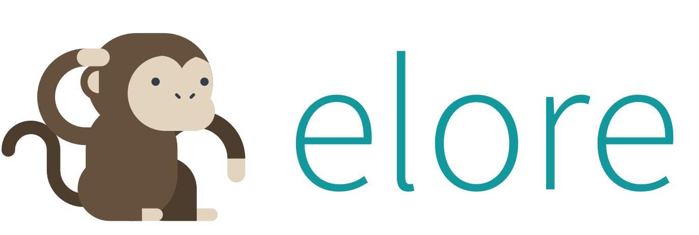
Elore is an online community for coders that pairs you in teams to start projects and advance your coding skills. Elore works with top companies and universities across the world to
recommend projects for your team to work on. It then lets you put them in your portfolio for potential employers to see. In addition, Elore sends you monthly curated content, the best
companies to work for and employment tips. Elore: move forward.
elore.io
Arun Kirubarajan, Julia Revai, Neeraj Aggarwal
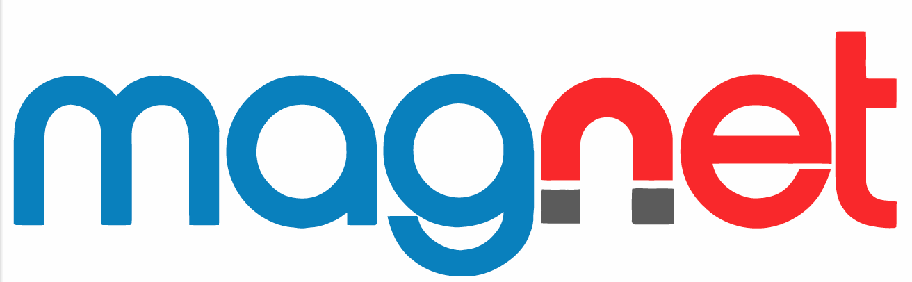
Magnet is a professional networking platform that enhances a user’s network
through the promotion of intelligent proximity based face to face interaction. Users get
notified if a person in their circle or a desired new contact is within their immediate
surroundings, fostering healthy business relationships.
bemagnetic.io
Akshay Trikha, André Bertram, Harshal Sheth, Maxwell Kazman
Buzz
Buzz. A social media application that flips the switch of screen to screen interaction backs towards face to face meet-ups. High school and college students never want to be alone – however, the limitations of current messaging applications and social media platforms leaves users in a wild mess of notifications, none helping to solidify plans for group activities. Buzz offers a variety of features helping to streamline that exact process of forming group plans. Whether it be practicing sports, heading to the beach, or simply grabbing food with friends, what makes you buzz?
http://buzz.strikingly.com/
Marcus Schiller, Bozhena Kulchyckyj, Ryaane Fadel, Reginald Fils
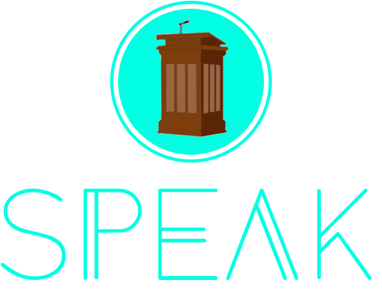
Speak is a mobile game that allows users to participate in one-on-one challenges where their public speaking skills are tested. Winners of each round earn more points while the others receive directed feedback on how to improve their impromptu speaking. The app's fun, competitive environment makes learning public speaking an everyday activity.
Akshaya Dinesh, Chloe Loughridge, Dimitris Chatzis
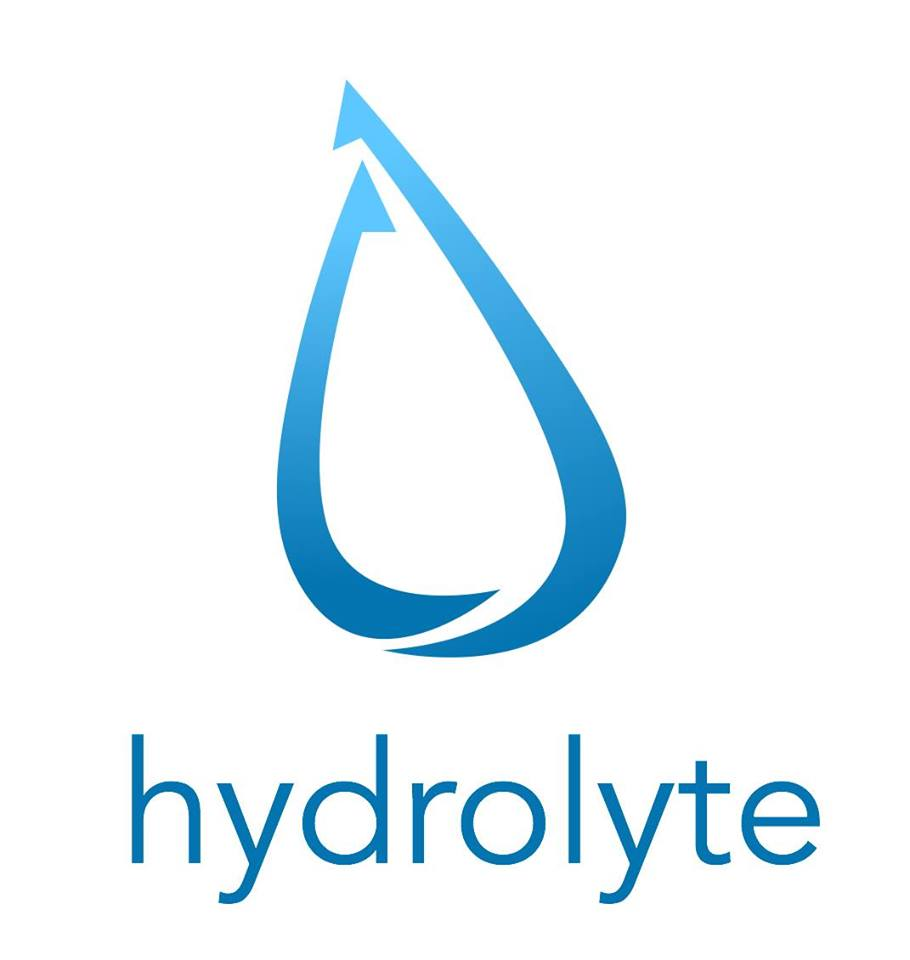
Hydrolyte is a wearable device designed to help athletes maximize their potential and improve their performance through proper hydration.It allows users to monitor their hydration status. If the user nears dehydration, the device will notify the user via vibration and provide accurate measurements of how much to drink in order to rehydrate.
www.hydrolyte.io
Tina Teng, Joshua Choi, Maria Mortari, Kelly Shin
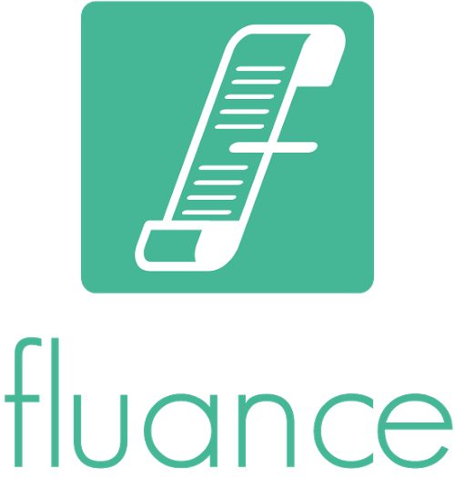
Welcome to fluance, where the mastery of language meets the minutiae of culture. We specialize in connecting you with a corresponding native in the country of your choice and allowing you to improve each other’s proficiency with our revision tool and channel for personal immersion. Using fluance, you can interact with anyone in the world and enhance your conversations while exploring social nuances.
www.fluance.org
Anmol Parande, Connor Hennessey, Lucy Xing
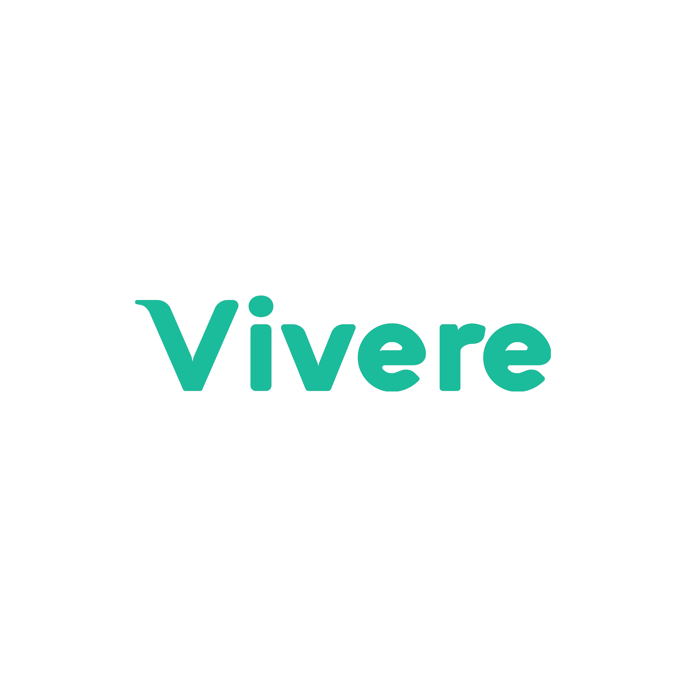
Vivere is a social platform that aims to connect socially isolated older adults, who live independently with others who are in the same situation but also share similar interests in the same area.
vivere.io
Endre Szucs, Juan Chomali, Julia Nadelmann, Philippe Sadat Pangestu
FLEX
FLEX is a mobile application that connects small clothing brands with young men who are trying to discover their style. Our mission is to empower small clothing brands, specifically focusing on streetwear, by helping them to establish a global presence and larger customer base. At the same time, we also aim to help young men learn more about their fashion tastes by providing them with a simple and convenient online shopping system.
flex.strikingly.com
Leah Hamann, Amiel Monasterial, Emily Zhang, Jonathan Ko
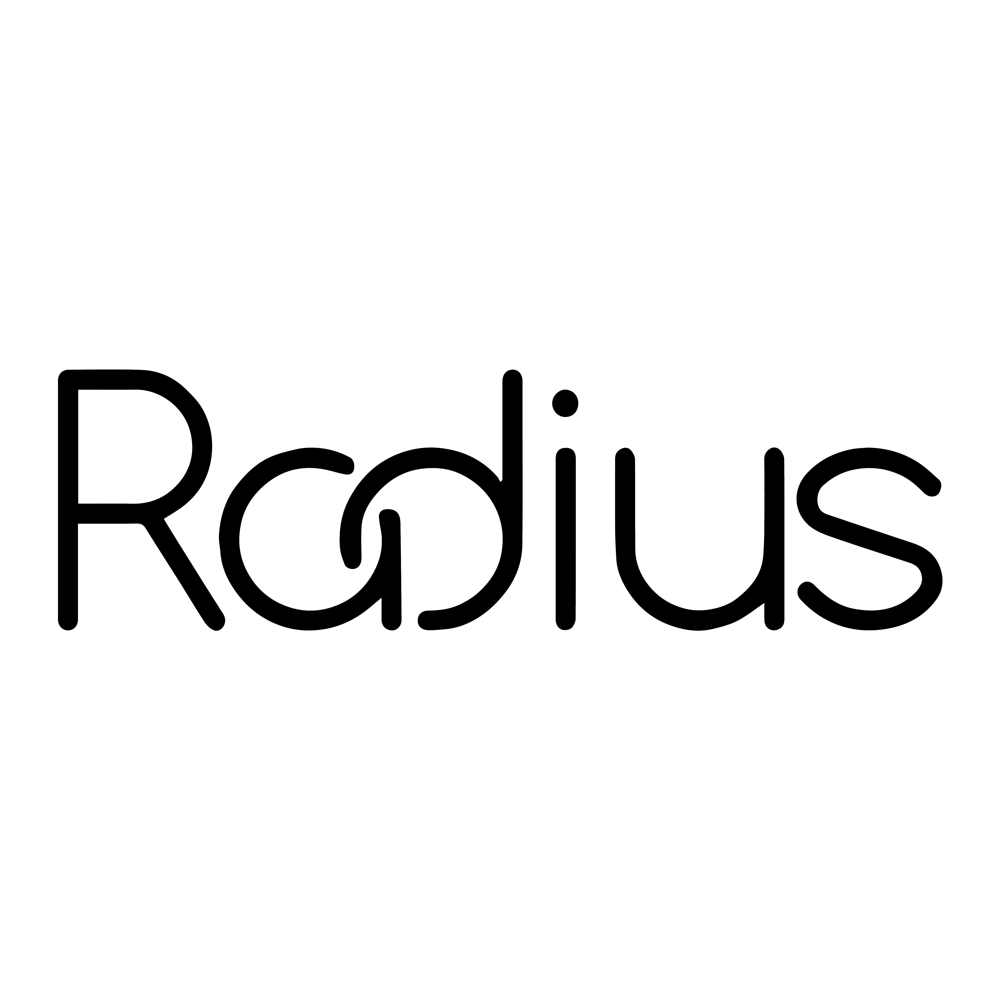
Radius is a smartphone application that aims to give busy parents the peace of mind that their children are safe. As opposed to constantly checking their current child safety application, parents with Radius will be notified about their children's whereabouts in a quick and convenient manner.
http://radius.strikingly.com
Hunter Contos, Richard Chai, Stephen Cozzone, Wendy Hu
Kamodo
Kamodo is a platform that serves to make it easier to connect with and practice speaking with people who are fluent in the language you are trying to learn. Kamodo will foster a community dedicated to learning languages, broadening cultural perspectives and making friends from all around the world. Kamodo - burn the language barrier!
www.kamodo.io
Carly Lugus, Julian Engel, Sara Du
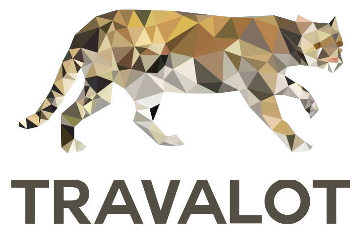
Travalot is an app that connects travelers and locals with similar interests in order to facilitate a more authentic travel experience. We are a platform where locals can sell activities and expierences for travelers. Our small group experiences create a close-knit environment that allows travelers to explore like never before. Whether it’s running, drawing, or skateboarding, we hope everyone can get out and explore the world a little differently.
www.travalotapp.com
Ari Sokolov, Dhruvik Parikh, Emily Hanson, Kathan Mally
StageHue
StageHue aims to empower people to seamlessly express their creative vision. Our first product, LightPad is a stage light controller providing seamless automatic sound to light with powerful manual control. It allows you to use any lighting fixture to create the perfect light show, in real time.
Ben Wang, Panagiotis Argyrakis, Zaryab Shahzaib
CarPals
CarPals is a cross platform carpooling app designed for parents for their children. Carpooling can be a hassle with long email chains and annoying text groups. Our app fixes this problem by providing an app that allows parents to create groups with other parents, organize their carpooling schedules into a simple calendar, update them on their children's location, and remind them of their own carpooling duties.
carpoolcando.strikingly.com
Anatoly Brevnov, Gregory Volynsky, Rishma Murugan, Samuel Rabinowitz
TopShelf
We aspire to let designers realize their vision by bridging the gap between small brands and big retailers. By allowing retailers to rent out small spaces or shelves within their stores to emerging designers, we are removing the barriers that designers face when it comes to retail. TopShelf brings the smallest brands to the public eye in a unique fashion.
topshelf.io
David-Angelo Ramos, Gary Perelberg, Maria Myers, Vinaik Gautam
Myx finds the cocktails you’ll love, tailored just for you. Start with a few drinks and ingredients you enjoy and Myx will find drinks that suit your taste in your vicinity.
http://myxapp.com
Kelvin Zhang, Kincso Kelemen, Tomer Schlesinger
Commemorate
Commemorate is a virtual time capsule which allows family members and close friends to relive the beloved memories they've shared with the deceased. People can create personal online hard drives that send pictures, videos and other media to their loved ones upon death.
Danielle Gin, Isha Mayor, Vini Tripathii
2016 First Session
Check out the final pitch videos here.
Most companies at MIT Launch continue past the summer with ~50% still operating a year after the program, so please visit their websites to learn the latest.
Politifund
Although many people care strongly about politics and hold an array of opinions about political issues, voter turnout in the United States is still at an all time low. To make matters worse, large corporations effectively block out the voice of the people through millions of dollars poured into lobbying efforts. Through crowdsourced lobbying, we unlock the power of the public by pooling collective wealth into lobbying campaigns started by the people for the people.
http://politifund.strikingly.com/
Jason Zhao, Rahi Patel, Gabi Fullam, Nick Majer
Swap
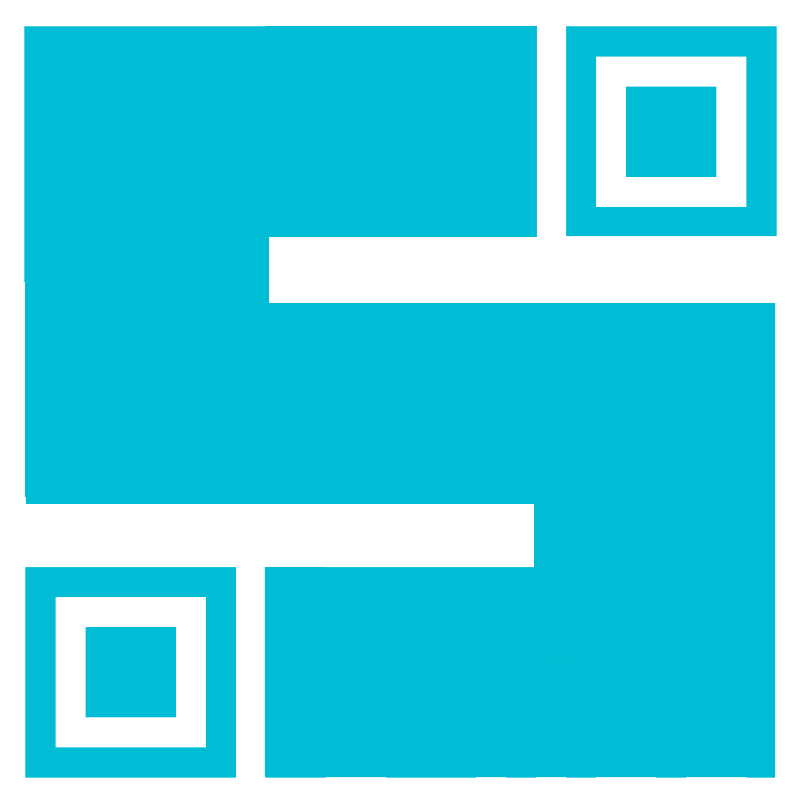
Swap strives to guarantee users the most effective and reliable platform to exchange contact information. Swap will allow users to mutually and automatically share multiple social media handles as well as phone number, name, and email with one another, all through a single scan of app's customizable QR code. With this scan, the time-consuming process of manually addressing each platform and linking accounts is eliminated, solving a sizable customer pain point. Notably, the app will offer multiple profiles, which will allow the user conveniently select what information to share.
http://www.getswap.io/
Kyle Michel, Matthew Ross, Micheal Bingham, Santiago Murra
BrightCapsule provides a unique opportunity for kids to learn outside the classroom. Every month, kids receive a goal to build a project around. They can submit these projects to our online community, where we bring together like-minded makers from all around the world for monthly hackathons to compete for prizes. BrightCapsule is more than simply following instructions – it’s an open-ended platform for exploration. We seek to inspire the next generation of makers and creators. What will you build?
http://brightcapsule.com/
Ryan Chang, Cathy Zhang, Owen Thoft-Brown, Nicholas Ionata
Atria
As technology grows, people have started to spend longer and longer times on their laptops, especially in the workplace. Fatigue, combined with the lack of breaks, has created tremendous loss of productivity at jobs. In the US alone, for instance, workplace fatigue costs up to 136 million dollars annually.
Our solution to this problem is Atria, the world's first intelligent laptop biosensor accessory. It is a cushioned wrist rest with sensors which scans EKG in order to detect user anxiety and then reminds the user to periodically take breaks in order to relieve stress.
http://www.getatria.com/
Ricky Ho, Rachel Hong, Anirudh Nair, Cory You
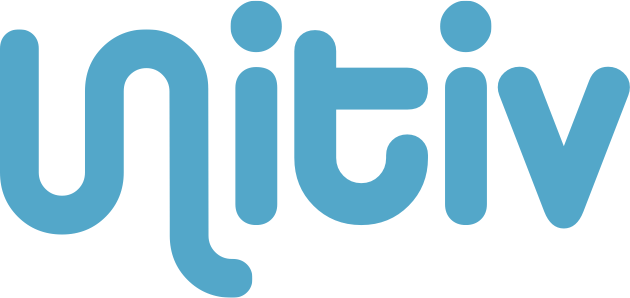
Many small local businesses that seek project funding are unable to obtain it despite thousands of interested customers. Unitiv aims to launch small businesses through collaborative communities. We are a rewards-based crowdfunding platform for local small businesses to raise funds to improve and grow, without making expensive loan payments or giving up equity. By bringing the power of crowdfunding to the communities, locals are now able to fund expansions they are passionate about, to turn those dreams into reality. With this platform, small business owners are able to raise funds directly from their customer base and the community at large.
http://www.unitivfund.com/
Kaili Wang, Aaron Moss, Ananya Gupta, Elektra Benkrid

The purpose of Luminos Education is to inspire and nurture the pursuit of knowledge in young students. We produce interactive children’s storybooks that teach the basics of circuitry within a fun and lovable story. Using only a pencil, kids draw circuits in the books in order to activate lights and other electronic components. These lights, motions and sounds will enhance various story telling elements and allow the child to customize each books as they please. As they watch their drawings come alive, they also learn the fundamentals of circuitry without being overwhelmed by difficulty.
http://luminos.education/
Will Bensky, Sean Ojha, Renee Ong, Dickson Chong
edibo
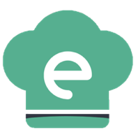
Edibo is a peer to peer platform that allows cooks who enjoy cooking to sell their homemade food to the local community. We aim to help home cooks turn their hobbies or extra food into easy and profitable revenue while providing healthy, customized, and authentic homemade food to the local community.
http://www.ediboapp.com/
Nakul Goel, Arjun, David Slakter, An Liu
VirtuScape
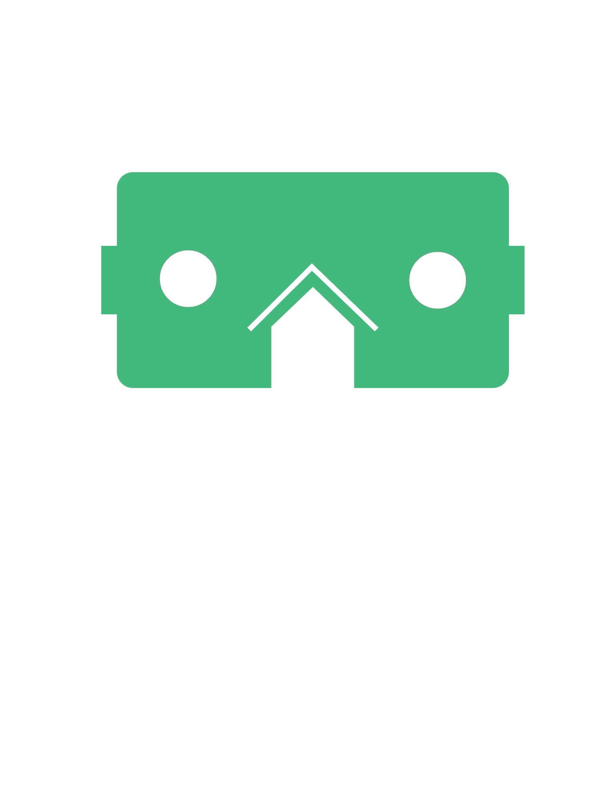
Real estate firms, realtors, and consumers all have problems with the time it takes to find a new home. Realtors spend ages showing customers around multiple houses only to have customers reject them. We revolutionize the entire process by utilizing thin, flexible virtual reality headsets in brochures, connected to our app. Customers can view 360 degree videos of properties in a fully immersive experience from the comfort of their own home as well as on the move or abroad, saving agents and customers time with the advantage of giving firms a competitive advantage in their marketing strategy.
Cameron Behar, Keshav Sivakumar, Keshav Garg, Sahil Menon
Wasteless
40 percent of all the food in the United States goes to waste. Most of this waste is generated from restaurants, grocery stores, and businesses. Why not do something better with all this food? Wasteless is a platform that will allow restaurants, bakeries and supermarkets to donate remaining items to soup kitchens, homeless shelters, and food pantries. This platform will allow local individuals to volunteer to deliver food to nearby non-profits requiring food. Individuals will have the chance to give back to their community and make a difference. This app will help restaurants stop wasting and start helping.
Elie Codron, Sreya Guha, Prianka Subrahmanyam
Lyfe Band
23% of neonatal deaths worldwide are caused by asphyxiation. These deaths can be caused by a range of conditions, from medical complications to a parent leaning on their child incorrectly. Our solution is a low-cost wearable for an infant's hand that would detect blood oxygen levels, and beep to alert the parent if levels drop below the optimum range. Our product aims to reduce infant mortality from preventable causes by improving response time and treatment effectiveness in life-threatening situations.
Abhinav Ashar, Mantej Singh, Alisson Amaral, Fiona Whitefield
Clementine
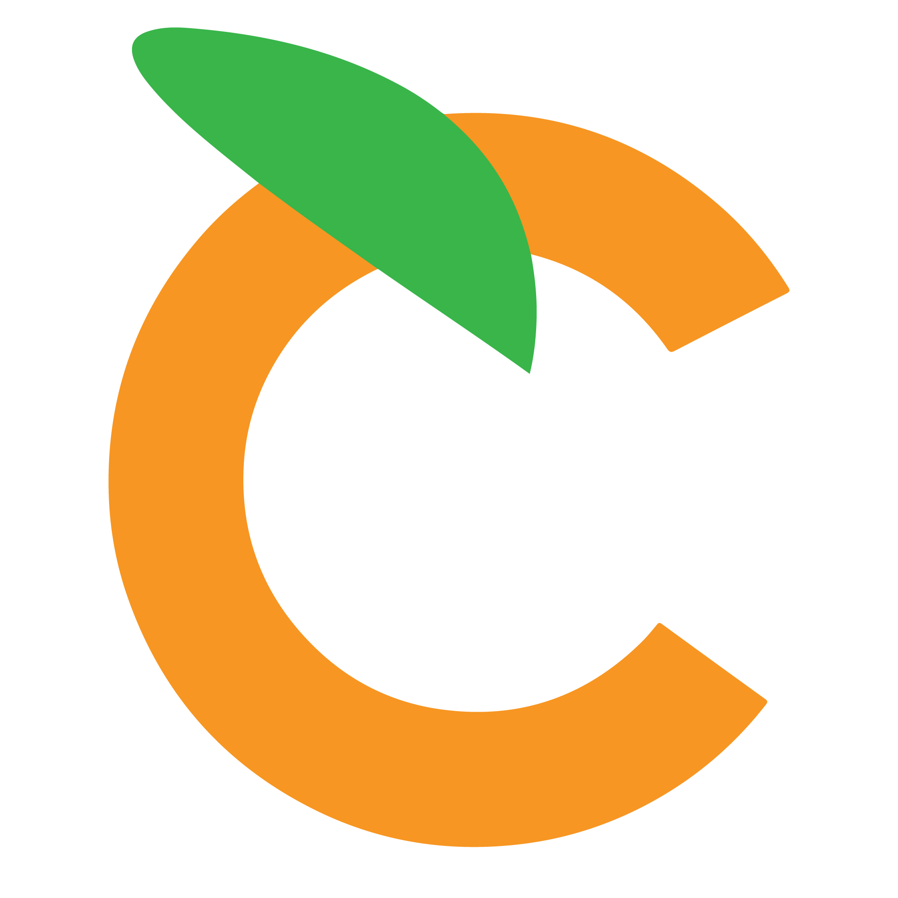
The market is a mess. Trading is complicated, risky, and takes time. Clementine, a web and mobile group investing platform, makes the market more approachable by minimizing these issues and maximizing your success. People work together in private groups to vote on trade proposals and make decisions as a single entity. Both returns on investments and number of votes are proportional to the amount of money an individual contributed to the joint reserve. Group collaboration makes learning the market a breeze, minimizes risk, and saves time. Collectively, we’re smarter, so let’s make smarter money. Together.
Shray Pungaliya, Robert Sforza, Natalia Dorogi
VivaFlow
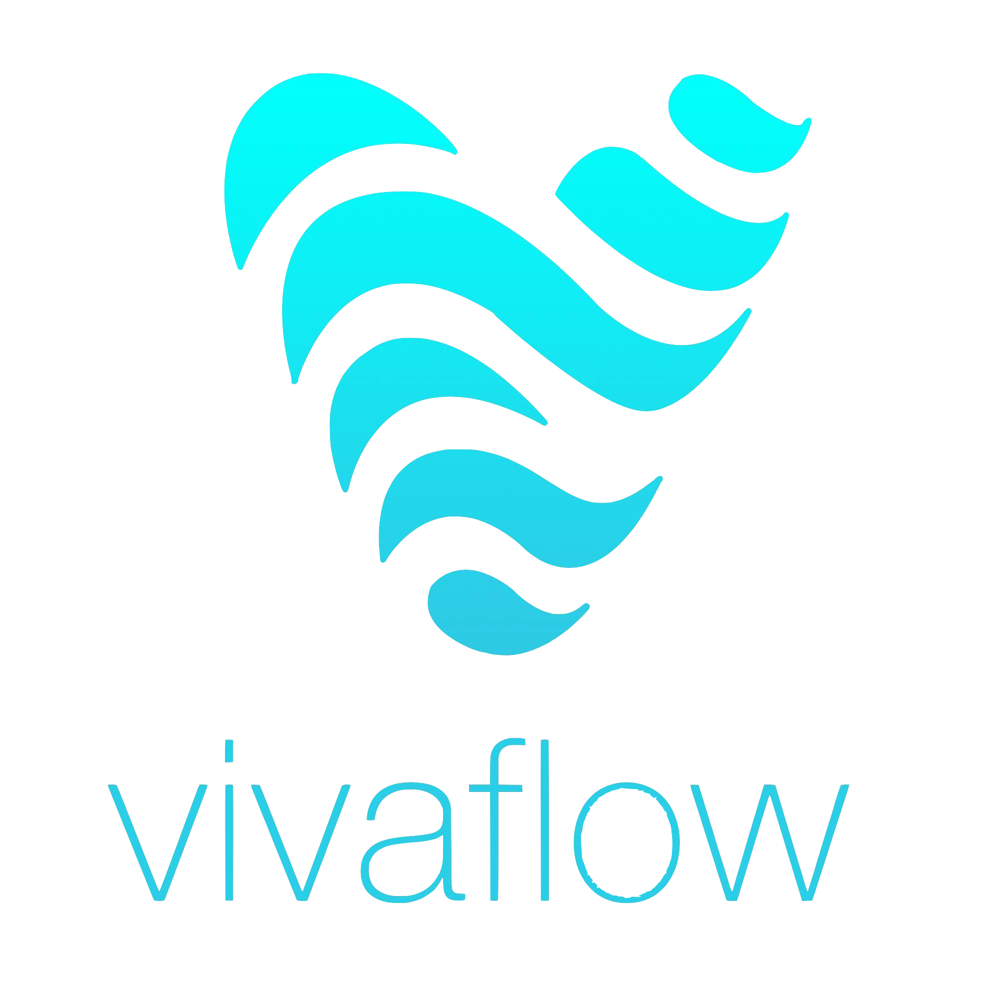
VivaFlow is dedicated to creating a simple technology to filter sea water into drinking water. It consists of a reverse osmosis membrane and a hand pump which generates enough pressure to desalinate and eliminate impurities. Our product is simple, portable, and convenient for users. VivaFlow is focused on providing this product to coastal rural communities for every day usage as well as during times of natural disasters.
Kai Lin, Mihika Nadig, Sanya Verma, Tommy Yang
GlassKnit
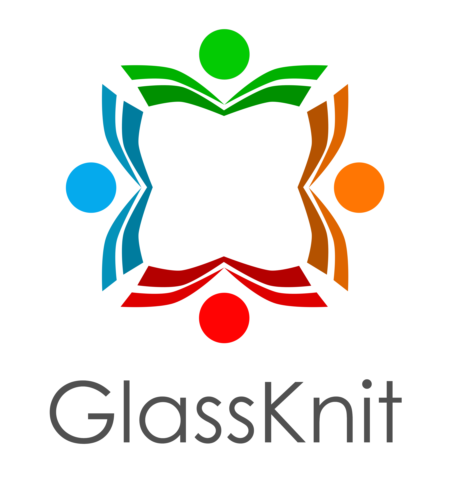
Millions of prospective college students invest time and money into choosing the best college for them. However, when creating their list or once accepted into colleges of similar caliber, students lack the resources to distinguish between schools. Colleges offer biased resources and many students lack the means and network to find valuable information. We offer a platform for students to find the right college for them. Prospective students contact college students directly, receiving honest, inspiring answers about all aspects of college life. By creating transparency in the decision process, GlassKnit seeks to connect students, build understanding, and support informed decisions.
Alexandra Koch, Devanshi Udeshi, Maanasa Kotha, Marianne Lu
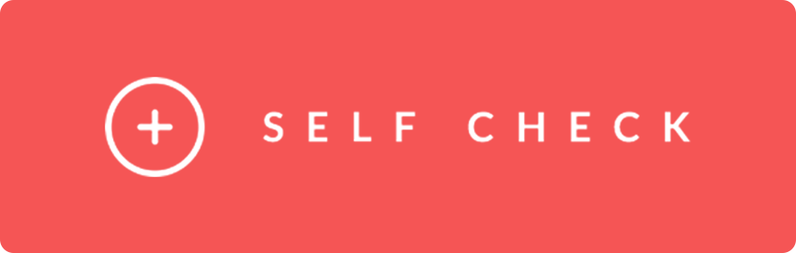
1 in 5 Americans will develop skin cancer at some point in their lifetimes. Too often fatal diseases such as skin cancer aren’t diagnosed until they are in their terminal stages when it is too late for effective treatment. Self Check is a convenient mobile application that gives users reminders and instructions to perform simple self-checks to diagnose potentially fatal diseases early and increase chances of survival. If one finds physical concerns, this app offers the ability to connect with local clinics and doctors, warning users to detect and address diseases early on while they are easier to treat.
Tucker Cullen, Adhiv Dhar, Varun Wadhwa, Michael Wang
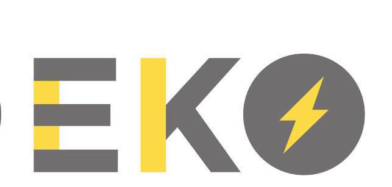
Eko is an electricity generator that absorbs sound and converts it into electricity. This solution can accommodate for both the current energy wastage, as well as an eco-friendly alternative to energy.
The device can be used close to airplane and car engines, and next to noisy industrial processes, and it is pioneer in opening doors to the reutilization of wasted energy. Additionally, the device will contribute to the environment by reducing noise pollution produced in daily processes.
Pascal Ekirapa , Takho Lee , Paulina Anzaldo , Rodrigo Ruz
SenSit
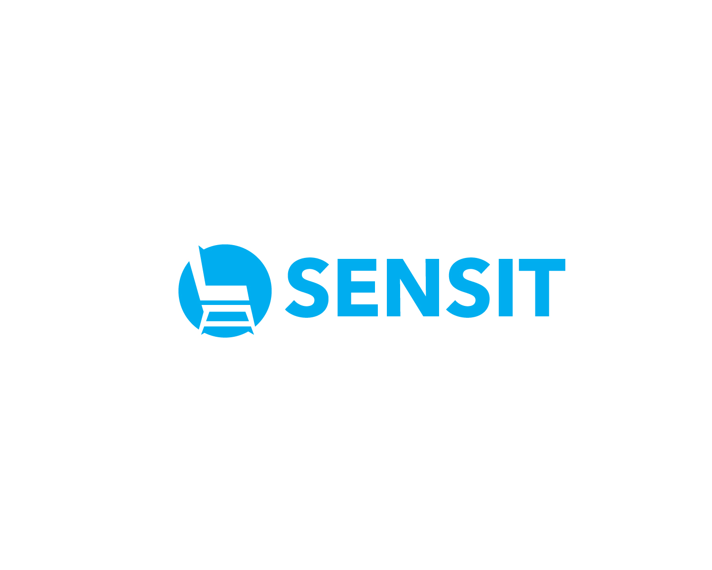
When children with autism are overstimulated, it can take hours before they calm down. With autism rates increasing exponentially over the past two decades, many parents, not knowing where to turn for a remedy, have been forced to buy expensive products that only accommodate and soothe one of the child’s senses. SenSit, our de-escalation chair, calms the child by providing therapeutic relief to the most important senses. But every child is unique, so we have included a variety of customizations that address every child’s needs. With our product, the child creates the chair, not us.
Luke de Castro, Adit Abraham, Paul Schumacher, Kevin Yue
Ordyr
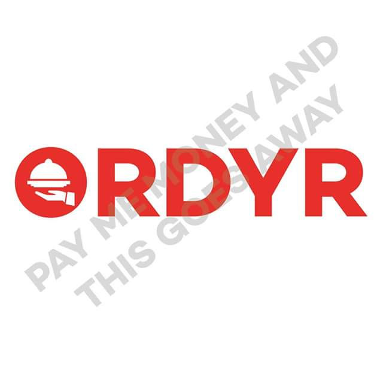
To this day, the restaurant experience has not yet followed the global leap into the digital age, maintaining inefficient individual systems that waste time for diners. Ordyr provides customers with a universal platform to handle all aspects of the sit in dining experience by allowing them to order, rate, and pay for food in all sit in restaurants, all with one simple app. In addition, Ordyr provides smaller local restaurants invaluable analytics and exposure, allowing them to prove themselves against their larger restaurant rivals.
Maanasi Garg, Aryaman Khandelwal, Manan Rai
Caravel
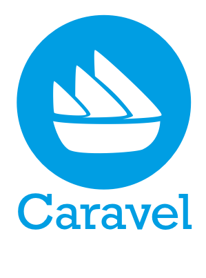
Although parents want to keep updates on their children during school hours, there isn't such a means yet. Enter Caravel, a web platform that enables teachers to send various updates via automated SMS to parents, so they can monitor student behavior and classroom activity in an accessible and easy manner. We seek to simultaneously strengthen the bond between parents and their children and consolidate parental trust in teachers.
Albert Zhang, Abhi Upadhyay, Saagar Godithi, Andrew Hojel
Previous Companies
Over 50 companies have been started by the high school students of MIT Launch.
About half of these companies are typically still in operation one year after the program. Many receive grants and funding in the months to year after the program.
A sampling is below. Hover over the logos for more information or click on them to go to their websites.